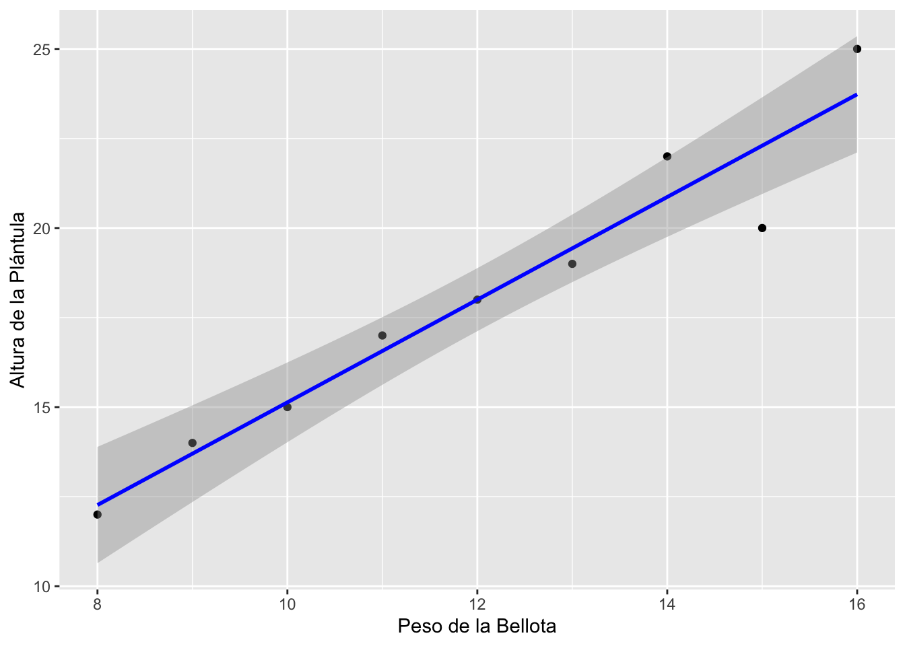

Mapa de localización de la zona de estudio
Análisis del Efecto del Peso de la Bellota en la Altura de la Plántula
Introducción
Este documento presenta un análisis de datos sobre el efecto del peso de la bellota en la altura de la plántula. Se utilizarán técnicas estadísticas para explorar la relación entre estas dos variables.
El estudio de la relación entre el peso de la bellota y la altura de la plántula es importante para comprender los factores que influyen en el crecimiento de las plantas. En particular, se ha observado que el tamaño de la bellota puede influir en el desarrollo inicial de la plántula (Quero et al. 2007).
Material y métodos
Zona de Estudio
La zona de estudio se localiza en el Parque Nacional de Sierra Nevada. En concreto se trata de un encinar situado en las proximidades del Jardín Botánico de La Cortijuela (Granada; 37º05’‘6.11’’ N, 3º28’11.38’’ W) a una altitud de unos 1650 m s.n.m. (Figura @ref(fig:mapa)).
Carga y exploración de datos
datos <- read.csv("peso_altura_bellota.csv")
# Visualizar las primeras filas del conjunto de datos
head(datos) peso_bellota altura_plantula
1 10 15
2 15 20
3 12 18
4 8 12
5 14 22
6 16 25Análisis exploratorio
En la Figura @ref(fig:scatterplot), se explora gráficamente la relación entre el peso de la bellota y la altura de la plántula.

La relación entre el peso de la bellota (\(x\)) y la altura de la plántula (\(y\)) puede ser modelada con la siguiente ecuación (Eq. @ref(eq:modelo-lineal)) de regresión lineal:
\[ \begin{equation} y = \beta_0 + \beta_1 x + \epsilon (\#eq:modelo-lineal) \end{equation} \]
donde:
- \(y\): Altura de la plántula.
- \(x\): Peso de la bellota.
- \(\beta_0\): Intercepto.
- \(\beta_1\): Pendiente.
- \(\epsilon\): Término de error.
Resultados
Modelo de Regresión Lineal
Se ajusta un modelo de regresión lineal para cuantificar la relación entre el peso de la bellota y la altura de la plántula.
# Ajustar un modelo de regresión lineal
modelo <- lm(altura_plantula ~ peso_bellota, data = datos)
# Resumen del modelo
summary(modelo)
Call:
lm(formula = altura_plantula ~ peso_bellota, data = datos)
Residuals:
Min 1Q Median 3Q Max
-2.3000 -0.2667 0.0000 0.4333 1.2667
Coefficients:
Estimate Std. Error t value Pr(>|t|)
(Intercept) 0.8000 1.7700 0.452 0.665
peso_bellota 1.4333 0.1442 9.940 2.23e-05 ***
---
Signif. codes: 0 '***' 0.001 '**' 0.01 '*' 0.05 '.' 0.1 ' ' 1
Residual standard error: 1.117 on 7 degrees of freedom
Multiple R-squared: 0.9338, Adjusted R-squared: 0.9244
F-statistic: 98.8 on 1 and 7 DF, p-value: 2.226e-05Resultados de la Regresión
Se utiliza el paquete broom para presentar los resultados de manera tabular (Tabla @ref(tab:tabla-modelo)).
| term | estimate | std.error | statistic | p.value |
|---|---|---|---|---|
| (Intercept) | 0.800000 | 1.770003 | 0.4519767 | 0.6649583 |
| peso_bellota | 1.433333 | 0.144200 | 9.9398957 | 0.0000223 |
El modelo ajustado sugiere la siguiente ecuación:
\[ y = \text{0.8} + \text{1.433}x \]
y explica un 0.93% de la variabilidad en la altura de la plántula.
Conclusiones
En base al análisis realizado, se observó una relación significativa entre el peso de la bellota y la altura de la plántula. Los resultados indican que el peso de la bellota podría ser un predictor importante para el crecimiento inicial de las plántulas, en línea con hallazgos previos (Smith and Brown 2020).
Por otro lado, la generación de documentos reproducibles facilita la comunicación de los resultados y la transparencia en la investigación. En este caso, la inclusión de mapas interactivos facilita la contextualización geográfica, lo que puede ser valioso para futuros estudios y aplicaciones prácticas en gestión forestal.
Referencias
Quero, J. L., R. Villar, T. Marañón, R. Zamora, and L. Poorter. 2007. Seed‐mass effects in four mediterranean quercus species (fagaceae) growing in contrasting light environments. American Journal of Botany 94:1795–1803.
Smith, J., and A. Brown. 2020. Seed weight as a determinant of seedling growth. Journal of Ecological Research 45:123–134.